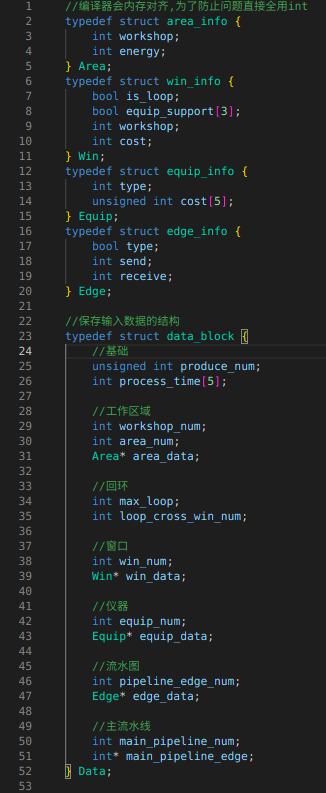
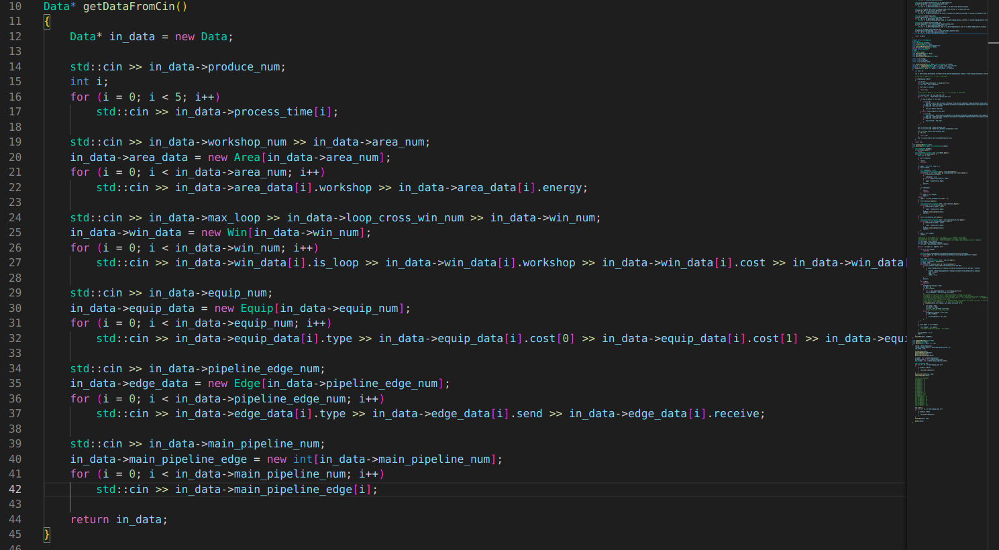
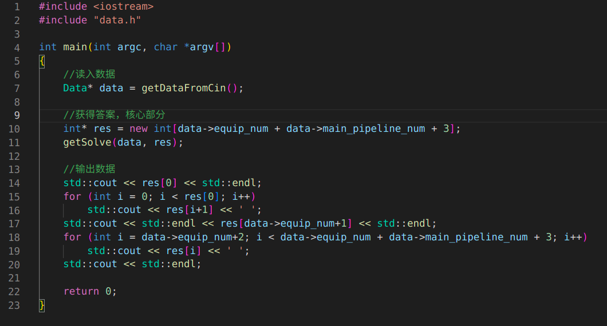
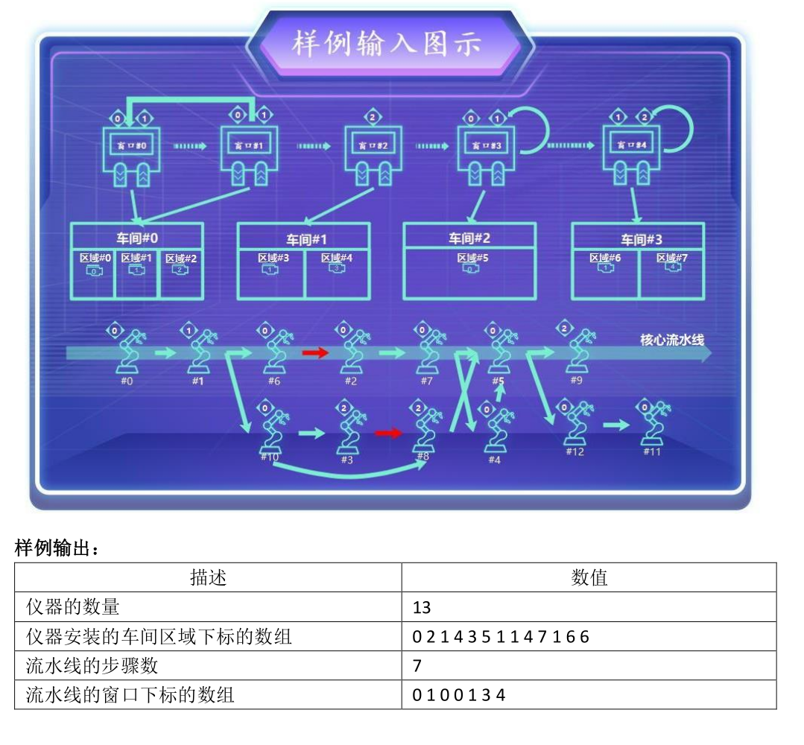
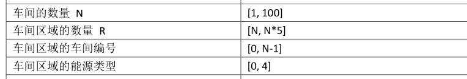
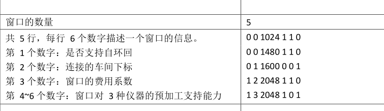
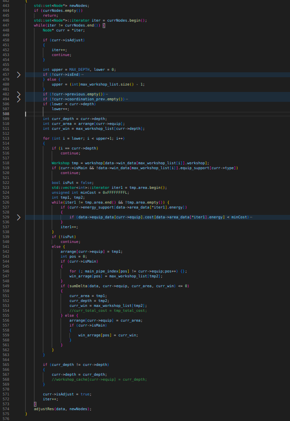

赛前整理
最近有许多专业课要考试，本来没太多闲功夫搞其它的东西。但没想到一个月前的比赛，我竟然要准备一下复赛了。大概一个月前，当时这个比赛初赛截止应该是15号，但不知道为什么延期到了30号。当时我提交的算法优化到了48亿的成本，排名第三，当时前面就有两个团队优化到了37亿，其它赛区也有，我估摸着37亿应该才是优化的开始，因为评分系统中，成本是大头，进行时间优化才是竞争的关键，如果没有达到基本的成本线，再怎么优化也是徒劳，因为一直到20几号都没有通知，以为黄了，所以干脆就不管了。到现在，我当初的猜想确实没错，我是以12名进复赛的，前面有十个团队都优化到了37亿甚至是36亿。因为依照惯例，复赛是在初赛基础上加限制的，如果我以现在的基础的参加复赛的话，那在起点上就已经输了，虽然已经没办法使用服务器的判分系统了，但原来的代码已经有点看不懂了，所以还是稍微总结回忆一下，并记录下来以防止忘记。
研究题目
这次的题目十分精炼，连代码的基本框架也没有，所以数据读入和输出需要自己完成，上一届其实是有这部分的，当然了，我是第一次参加这种比赛，主要还是因为好多比赛都太默默无闻了，不知不觉过去了都不知道，我还是5月份看别人参加比赛，才去四处看看有什么比赛可以参加，才发现了这个比赛然后参加的。数据输入输出使用标准IO流，拿上一届题目里的框架，仿写一下就差不多了
先定义一批简单地结构体，保存原生的读入数据，因为对原生数据没必要有处理函数，所以不使用类来封装数据。封装数据的主要目的是便于管理，单纯从汇编上看的话，封不封装数据本质都是一样的
在这里，我们从标准输入流读入数据，并以原生的形态保存在结构体Data中。因为这是在一个方法内读取数据，所以要使用new使Data数据生成在堆内存上。我写代码都喜欢带上命名空间，虽然看起来麻烦，但写起来有代码提示也不会太难，而且从汇编上看本质是一样的，而且还能区分不同命名空间中同样的函数名
这框架的最后一部分，我们的主方法了，getSolve是我们的核心函数，data是输入数据，res用于保存最后的结果。框架已经搭建完成，然后一切的分析与实现都将在getSolve内完成，不过在此之前，我们再来读读题目。
题目归约
文本解读一段时间后，从样例可以更加直观地读懂本次题目
我们需要两个结果，一是每个仪器放在哪个区域，二是主流水线上仪器的一个窗口匹配方案。如果真的这样去理解的话，实际上相当于被题目前面的一大段话给误导了。题目所需要的应该是所有仪器的“窗口匹配方案”，我们来详细地解读一下。首先，在车间上我们可以发现一些端倪
车间的区域数量是[N, N*5]，N是车间的个数，换句话说就是，每个车间的区域个数是1-5，为什么呢？因为能源的个数只有5种，每个车间内不存在两个区域能源相同，其实相同也没什么关系，不过这其实暗示了我们一件事，我们给仪器选区域，相当于选车间，并放到这个车间中能源费用最低的区域中去。这部归约的目的其实是为了下一步，进一步考察数据
我们发现，我们通过窗口来定位车间，而不是车间来定位窗口，其实这是在间接告诉我们，窗口到车间是映射关系，但不一定是可逆映射，即得到窗口就能得到车间，但反过来却不一定，由于映射不一定可逆，所以得到窗口在预期内会比得到车间有更多的信息。再回去读题目的话，这个信息实际就包含了主流水线的窗口匹配方案，所谓题目的误导是什么？它误导我们得到丢失了信息的区域放置方案，再让我们回去找原来的窗口匹配方案。由于映射不一定可逆，所以从区域放置方案去找窗口匹配方案是一对多的，属实是自找麻烦，还不如一开始就找“窗口匹配方案”。
总结一下，我们的目的转化为了将仪器放在哪个窗口上，约束则可以通过映射关系来寻找，由或者将信息保留在窗口的实体对象上。窗口放置方案的下一个需要归约的约束是流水图和窗口回环。由于仪器在窗口间的转移是没有费用的，所以只要窗口对即可，于是我们可以对回环进行展开，比如就拿例子来说，其展开就是[0,1,0,1,2,3,3,4,4]，我们的目的就是将仪器排到这个窗口列上，原来只有0-4号窗口，现在加上回环以后有0-8号窗口，容易证明两种排布可以互相转换，且在当前的费用约束下能够保持费用的不变，这几点说明了转换的合理性。至于流水图约束，由于流水图是无环有向图，问题实际转化为了图算法中的拓扑排序算法，需要拓扑排序的节点即流水图上的仪器，顺序区间由上面的窗口展开给出。大致思路就是这样，接下来就是落实到代码上
具体内容没什么好说的，主要有两个部分，第一部分是得到一些结构化的数据，像workshop表示车间，Node表示仪器，主要Equip名字已经被前面给占用了，所以换成了这个，而且放在流水图了，称做节点也没什么问题。第二部分，则是从根节点开始对流水图进行广度优先遍历(BFS)，这里我们对节点定义了深度depth的参数，它实际就是我们之前所说的窗口展开的位置，而在BFS里，其表示对应的拓扑序。由相关定理可以知道，我们得到的是最小拓扑序，我们需要的是最小费用，每个仪器的后面都可能还存在费用更低的窗口，在云端跑一遍以后最后得分67亿。其实这只是完成题目的baseline，连最小费用的寻找都还没有实现，接下来我们以优化的思路来寻找最小费用，暴力破解我试过了，直接超时，云端的数据集比本地大几十倍，在15s内完成不了。
小优化
首先依据之前的定理，可行解一定在当前解的后面，由于前面节点都是最小的，从前面调整是没有活动空间的，所以我们的调整思路是反向广度优先遍历，依据深度将每个局部节点调整到当前费用最低的点，实现比较简单，就像下面这样
其实就是将前面从根节点的遍历反过来再进行点修改而已，我们使用sumTotal来计算当前的费用，我已经试过了，费用计算并不会影响性能，就算是计算差值，其结果是一样的，至于为什么，如我之前所说，评分系统优先评估方案的最小费用，只要不超时，同样的方案是无差异的。这里有个细节，就是如果费用相等当然话，我们也选择后移，这主要是为了让前面的节点有更大的调整空间，从而使得到更优解的可能性变大。这时有没有觉得，这样应该是全局最优的吧？并不是这样的，其在云端最后得分为65亿，至少了2亿，想不到吧！我们中部赛区的人比较强，至少60亿才有进复赛的可能。
我先来讲讲为什么会有这样的结果？其原因是没有考虑未来的机会成本，随便截取一条流水线，其反向的深度有限遍历，上面的每一个节点，存在时间上的先后顺序，我们总是优先调整后面的节点，并且其在未来不会发生改变。而在每次调整中，我们只是对当前节点的当前时间点调整到最优，并不能保证其在未来仍然是最优的，我们具一个最简单地例子。在非主流水线上的例子，这样我们唯一考虑的只有安置费用
仪器2在仪器1的后面，第一行表示仪器一对应窗口的安置费用，第二行表示仪器二对应窗口的安置费用，使用反向遍历时，我们优先调整仪器2，由于1的费用最低，所以仪器2会被安置到②位置，然后安排仪器一，由于顺序的限制，使得仪器一只能安排在①号位，导致最终总费用为11，但很显然仪器一安排在②号位置，仪器二安排在①号位，综合费用为3才是最优的。
优化的方向其实有很多，比如当从局部最优点向右偏移得到的费用增加并不多时，引入一个预测移动机制，提前再移动下一个节点，如果能到达更优就保留这个偏移，又或者更改评估调整结果的函数，不使用综合费用，而使用期望费用，比如将预留空间与费用的变动进行相比，将这类系数最低的调整结果进行保留。至于我是怎么优化的？等复赛过了再说，我们的目的只是总结而已。
云端判定器
我发现这届给的信息真是越来越少了，不仅没有基本的代码框架，连云端的判定器也不给，更过分的是云端给的反馈信息还少。还记得当时，判题死活通过不了，明明本地跑得好好的，到云端就变得莫名其妙了，其原因是，云端数据与本地数据的“巨大差异”，有哪些差异？先来讲讲，黑箱实验。
黑箱实验
黑箱实验，就是提供输入，然后黑箱给你输出，你来猜测黑箱内部性质的过程。在这里，黑箱是云端的判题器，输入是我们提交的代码，输出就是判题器的得分和反馈信息，至于那个日志下载就是一个摆设。接着我们想要猜测的性质是什么？这就是与判题器斗智斗勇中产生的东西了。
第一次提交的时候，我们得到的反馈信息是“编译失败”，因为CMakelists.txt都是官方写好的东西，在本地编译通过的情况下出现“编译失败”是因为你交错东西了，事实确实如此。不过这主要还是从上一届的判题器中发现的，判题器的执行过程大致是这样的，先解压缩你提交的东西，然后将“它所认为的代码部分”移动到相应位置，使用云端的CMakelists.txt配置编译。如果你提交的文件内容不符合要求，判题器不会检测，只会将一段不存在的东西进行移动，然后编译过程针对不存在的东西，结果自然是编译失败。
接下来，我们应该假设提交的文件格式和代码都没有问题，因为它们不能提供云端的信息，只是用来说明你提交的东西有问题。在黑箱实验中，这些信息只会白白浪费次数，虽然一天有30次之多，但依旧有限。除去“编译失败”，“判题成功”加分数也是没用的信息，它是用来反馈你算法优劣程度的东西，是你的信息，而不是云端的信息。“分数”只有当判题成功的时候才会出现，由于我们已经排除了它，所以我们真正可用的信息只有反馈信息的有限内容了，经过实验只有五种，“运行超时”、“运行错误”、“逻辑错误-非法匹配”、“逻辑错误-非法数量”、“内存溢出”。接下来以实例来看看，如何利用这些信息吧。
黑箱实践
由于我最开始写的是暴力算法，自然返回了运行超时，但是在当时我们不应该知道云端的数据集是很大的，因为人应该存在第一印象效应，我们第一次见到的是题目所给的小数据集，所以我们应该主观臆断地认为云端的数据集也是小的，我们最先想到的应该是代码的哪个语句出了问题。我确实也是如此，最开始我有两个猜想，一个是标准输入流cin卡住了，另一个是循环语句因为数据集不同而导致卡住了。代码比较复杂，直接定位比较困难，云端也不会告诉你代码在最后的时间运行到了哪里？那该怎么办呢？那就是利用判题器输出的差异性。对每一个循环语句进行注释，如果有哪一个注释导致反馈信息不是超时，则说明此注释的代码卡住了。以这样的方法确实找到了，是一个for循环卡住了，但不好的消息是，这是我们进行暴力搜索的for循环。这意味着，我们还得查找for循环的哪一步出了问题，for循环有一个指标表示我们循环到了哪一步，一个简单的方法是根据指标的不同数值进行break，看到底卡在了哪一步，结果是卡在了某个没什么特点的数值上。瞬间，我们变得百思不得其解了，睡觉吧。
在新的一天，我们又看了看算法，话说回来，我们是怎么进行暴力破解的呢？与一般的线性暴力破解不同，这个问题的暴力破解需要使用回溯技术。比如，我们的仪器排布问题，基本思想是，先对第一个仪器所有的可行解进行遍历，在进行下一个仪器的遍历前，我们需要先将第一个仪器先模拟放置一下，这是因为它们之间存在先后约束。以此类推到最后一个仪器放置完毕后，记录总费用，然后回溯，将前一个仪器模拟放置到下一个可行位置。这其实还是一种稍微优化过的暴力算法，因为仪器存在约束，所以模拟放置来保证约束是必需的。这时我们突然意识到，回溯在某种意义上也是一种循环，看来单纯地考察循环节点还不够，还得考察出问题的循环节点里的回溯节点。就是因为这样，我发现了问题所在，回溯节点好像不止十来个。问题所给的例题只要十三个仪器，所以回溯节点最多是十三个，当时在验证的时候，我们发现回溯节点到了快30个都还没卡住。这其实表明了一个事实，仪器的个数不止十几个，这时我们立马看一下题目
啊，瞬间觉得自己像个小丑，仪器的数量原来最多可以达到1000个，这是我们应该立马意识到问题的所在，回溯算法的运算量是随回溯节点个数呈指数增长，底数是每个节点的可行解个数，我们拿2其实就是足以说明问题了，
深深懊恼的自己，瞬间起了报复心态，我想知道你的数据集到底有多大？这时，我们终于产生了黑箱实验的目标了，云端判题器的数据集到底长什么样？一个可行的办法是直接找到运营方让他把数据集给你，但是呢！运营方说，为了比赛的公平性，我们不应该把数据集私自泄露给任何非比赛相关方。即然他们不愿配合，那我们就自己动手丰衣足食——黑进服务器，直接抢走数据集，可是啊！为什么我们的黑客技术如此的垃圾啊！根本就无从下手好吧。冷静，冷静！只是因为气上心头而已。看来歪门邪道都是不行的，我们只能规规矩矩地利用已有的条件了，那就是提交代码。
从上面的过程中，我们可以得到了一些启发，那就是相同性质的代码可以有四种不同的反馈信息。这里必需说明，什么叫相同性质？比如所有编译不通过的代码算一种性质，但在这种性质的代码中不论你做怎样的修改，最后只能返回“编译失败”的结果，这意味着我们的控制等于不存在。正常运行代码也是同理的，唯一可以控制的其实是异常代码。这里可以说一下，我搞开发的一些感受，在debug是最怕的不是一大堆报错信息，而是只有一句报错信息，它告诉你，你的代码有问题。有这样的例子吗？有，我有一次跑别人的Gradle项目的时候，不论你怎么搞，它就给你一个错误，NullPointerException。这是java的空指针异常，为什么会突然来个java，因为Gradle实际就是一个用java写的项目管理工具，而我这里的Gradle是用来管理Android项目的，gradle出错，其实就是gradle的配置文件出了问题，但gradle是多项目的，这说明它的配置文件都是好几个出现的，而且gradle有一点代码的意味在里面，并不是可以直接用json之类的格式直接包含的，所以确实存在debug问题。当然只要有心还是可以把问题找到的，问题其实都是版本，但版本跨度实在离谱。首先是编辑器AndroidStudio的版本，老版的AS会提供用于Android开发的NDK路径，但我现在用的新版没有。Gradle对版本的基本机制是双共存，电脑上使用最新的Gradle，项目中使用其所要求的gradle-wrapper版本以适应其所对应的配置文件，在旧版中gradle-wrapper会向AS索要项目需要的NDK路径，新版中则需要自己添加NDK路径到配置中。报错遵循向上传递，gradle-wrapper会认为NDK本该存在于AS中，但找不到，但本地的gradle会认为，NDK应该存在配置中，而配置中却没有写。两者的错误列表并不匹配，所以只能在公共的java中找出它们的父类NullPointerException来作为报错信息传递出来。这样有些抽象，我举个形象的例子。假设java可以认识英语和数字，并能将其区分开了，gradle-wrapper是java的子类所以不仅认识英语和数字，还认识中文，所以有关中文的错误它会以中文来写，gradle也是java的子类，所以认识英语和数字，但新版中发现认识中文没什么用，所以改成了认识日语。gradle-wrapper读取到了信息“1ab(不是中文)”，并传递给了Gadle，但是Gradle不认识中文，所以它看不懂“(不是中文)”这个报错信息，只能将其认成，“1ab(it is not a letter)”。
废话讲太多了，其实我们只想说明，没有任何信息是很可怕的。实验正是因为结果不同才会有研究价值，回到我们原来的问题，我们想要的信息，即数据集的信息，实际在程序的运行内存中，想要捕获它，实际就是代码中的变量。但与我们平常Debug不同，我们不能直接通过标准输出流cout来得到结果，只能通过云端的反馈信息，所以我们来模拟cout即可，其方法就是主动引起异常
反馈的基本思想是一一对应的原则，判定器只有5种反馈结果，所以我们最多只能假设5种分类。一一对应在数学上是一个十分深刻的思想，有时间再说说吧，这里我们就简单地应用一下，使用区间估计比单存的数值估计具有更快的速度，所以我们判断我们尽可能使用不等关系。如果最终返回运行超时，则仪器的数量应该在[100,200]之间，类似的，我们还可以做更多的判断，这时你应该知道了吧，为什么最开始，我要有一个保存原始数据的结构体了。
结尾
没什么好说的了，总之从期末复习中拨出点时间来研究算法吧，怎么说呢？既然进了复赛，就努力一下吧。人家运营方又提供路费，又提供午餐和晚餐，搞得我都不好意思摆烂了。